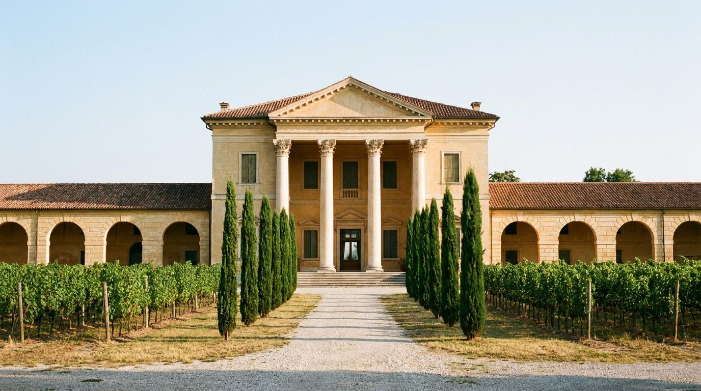
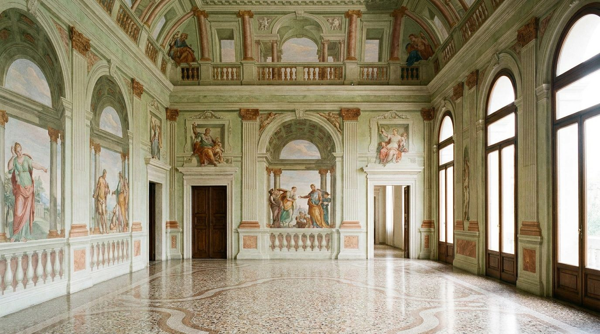

Atlante · IT-06 · Italia · Nord
Villa veneta palladiana affrescata
Esempi · esterno e interno


Architettura · elementi riproducibili
- simmetria assiale rigorosa, sale rettangolari con volta a schifo, affreschi a trompe-l'oeil con finte architetture e paesaggi
- altezza 5-6 m
- pavimento in cotto o marmo
- loggia con colonne e timpano
- porte centinate allineate
- Il colore viene dall'affresco, non dalle pareti: verde veronese, rosa tiepolesco, cieli azzurri.
Luce
da sud attraverso la loggia, taglio netto e geometrico; il set va posto di tre quarti rispetto alla finestra.
Prompt di generazione (EN)
Palladian villa hall of Villa Barbaro type, 5.5 m coved ceiling painted with Veronese-style trompe-l'oeil architecture and landscape, terracotta floor, aligned arched doorways, south light through the loggia cutting a hard rectangle across the floor, 24 mm, fresco-toned grade.